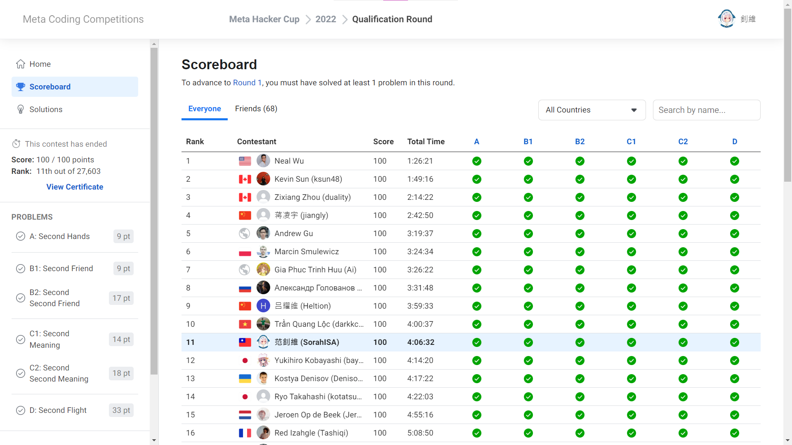

MHC 2022 Qualification 比賽心得
今年開始 Facebook Hacker Cup 改叫 Meta Hacker Cup，瞬間感覺變得高大上了 (X)，不過現在聽到 MHC 的簡寫完全無法直接反應過來 www。
如果你沒有打過 Meta Hacker Cup，可以參考看看 這篇介紹文。
前言
雖然 Qualification 總共有三天、要什麼時候打都可以、也只要 AC 一題就能晉級，但是如果想要拿到高名次反而就只能選這種比較少電神會認真打的比賽了 www。
於是，目標就成形了：
- 在 8/27 01:00 開始做題
- 把能寫的都寫完，能唬爛的都唬爛完
- 目標是在三個小時內全部 submit 成功
吃 FST 再說
- 拿到盡量高的排名
Qualification Round
因為是以破台為目標，所以基本上就是按照順序開題。開場先花了兩分鐘把東西整理好，就開始看題了～
A. Second Hands
\(9\) 分 (6:17)
直觀的想法就是把出現兩次的數字都分開放，有出現三次以上的數字或是
\(N > 2K\) 就是
NO。
稍微想了一下就發現不用真的放數字，只要上面 NO
的條件不符合就會有解。
B1. Second Friend
\(9\) 分 (30:18)
我看到最上面說 B2 \(\supseteq\) B1 之後就直接跳到 B2 了，所以我沒有看這題。
B2. Second Second Friend
\(17\) 分 (31:06)
第一眼的感覺是填滿會最好，不過因為有些位置會被石頭擋到只剩下一個 氣（定義一個位置的 氣 是他四方位相鄰的格子中可以種樹的位置數量），而那些只剩下 \(0 \sim 1\) 個氣的位置又會讓周圍的氣減少，於是要使用 DFS 來找所有會影響的位置。
寫了一堆 bug 讓我多花了 9 分鐘 QwQ。像是一開始把氣的初始值定義為周圍是道路或樹木的數量，結果 DFS 時又會把石頭周圍的氣都 \(-1\)，就導致石頭被扣兩次。
上傳的時候發現會燒雞，感覺是檔案太大的問題？於是就按照他們說的發了個 Clarification 附上 code 跟輸出 .zip 檔。
這時候我才發現每一題的名稱都有 Second www。
C1. Second Meaning
\(14\) 分 (43:27)
第一個想法是「只要所有符號壓縮後的長度都一樣就不會出現歧異」，不過給你的 \(C_1\) 可能會超短（\(\le 6\)）讓我們沒辦法弄出 \(N\) 個相異字串。
那不如就把 \(C_1\) 獨立出來看？讓 \(C_1\) 的開頭跟其他人都不一樣，這樣讀到 \(C_1[0]\) 就知道是 \(C_1\)；讀到不是 \(C_1[0]\) 就知道是 \(C_2, C_3, \ldots, C_N\)，再讓 \(C_2, C_3, \ldots, C_N\) 的長度都相同就能把 \(C_1\) 分出來了！
C2. Second Second Meaning
\(18\) 分 (43:44)
本來想說 C2 是給你 \(C_1, C_2, \ldots, C_K\) 求 \(C_{K+1}, C_{K+2}, \ldots, C_N\)（沒看題目被抓到），結果只是限制輸出長度要 \(\le 10\)，直接一起水掉 >////<。
C1 跟 C2 都上傳完之後看了一下輸出檢查有沒有弄錯檔案，結果發現我的
Case #x: 後面沒有換行，嚇死。
不過 validation 都有過，應該沒有差ㄅ？反正我又重新傳了一次。
為什麼不要出到 \(|C_i| \le 7\) 呢 OwO。
D. Second Flight
\(33\) 分 (91:40)
AC Solution (\(\texttt{bitset}\)) # AC Solution (\(\texttt{unordered_map}\))
一開始覺得跟最大流有關，不過發現只要看 \((X_j, Y_j)\) 有沒有邊以及枚舉中間點 \(Z_j\) 計算 \(\min\left\{C_{(X_j, Z_j)}, C_{(Z_j, Y_j)}\right\}\) 就能得到答案，我就覺得與其好好想解不如直接寫暴力 www。
不過 \(\mathcal{O}(QN)\) 還是太大了，就算暴力也應該跑不完。
我決定來試試一個簡單的簡化法：把詢問過的答案存起來，並每次枚舉 \(X_j\) 跟 \(Y_j\) 度數小的去詢問大的有沒有。
把度數前 \(\mathcal{O}\left(\sqrt{N}\right)\)
大的點的鄰居存成 bitset 以求 \(\mathcal{O}(1)\) 查詢，如果 \(X_j\) 跟 \(Y_j\)
都是度數小的那群就直接線性掃過去（先把鄰居按照編號排序）。這樣複雜度就會變成
\(\mathcal{O}\left(Q\sqrt{N}\right)\)。
其實是 \(\mathcal{O}\left(M \sqrt{Q}\right)\)，我不會算複雜度 QwQ。
複雜度證明
官方有提供證明（最下面 Solution 2），不過有個更簡單的作法（Credit to smax）：
- 首先，對於出現過的 \((X_j, Y_j)\)
的回答都是 \(\mathcal{O}(1)\)
的，因為有用
unordered_map存起來。 - 以下假設有 \(\text{deg}(X_j) \le \text{deg}(Y_j)\)。
- 定義一個 threshold \(B\)，把度數
\(\ge B\) 的叫做阿姨，\(< B\) 的叫ㄌㄌ。
- 如果 \(X_j\) 是ㄌㄌ：>////<。因為ㄌㄌ的複雜度夠小，只有 \(\mathcal{O}(B)\)。
- 如果 \(X_j\) 是阿姨：頂多只有 \(\mathcal{O}\left(\frac{M}{B}\right)\)
個阿姨，所以只會遇到至多 \(\mathcal{O}\left(\frac{M^2}{B^2}\right)\)
次。
- \(X_j\) 是阿姨 \(\implies\) \(Y_j\) 是阿姨。
- 只考慮不重複的詢問，因為有把回答存起來。
- 所有遇到ㄌㄌ的複雜度加起來是 \(\mathcal{O}(QB)\)；所有遇到阿姨的複雜度加起來是 \(\mathcal{O}(\frac{M^2}{B^2} \cdot B)\)。
- 取 \(B = \frac{M}{\sqrt{Q}}\) 可以讓複雜度達到最小的 \(\mathcal{O}\left(M \sqrt{Q}\right)\)。
寫到這裡我才發現其實把
pair<int, int>壓成int64_t就可以用unordered_map了。
然後bitset跟整個adj[]也都可以被unordered_map取代掉，我bitset中毒 QwQ。
光是 validation 就跑半分鐘了，所幸正式的 input 也大約兩分鐘就跑完了，不知道筆電如果開風扇會不會跑快一點。
賽後才意識到 D 的輸出足足有 36 MB，不知道為什麼反而上傳的了？
做法可以參考 官方的影片解說，我把上面的 Solution 1 改成 Solution 2 之後就跟其中一個官解幾乎一樣了。
總結
- 分數：\(100\)\(/ 100\) 分
- 排名：\(11\)\(/ 27\,603\) 名

果然拿到了超高的名次，感覺 C 意外的水，而且 D 看題解才發現根號就是官解的複雜度，有種失望的感覺... 本來希望看到神奇的帶 \(\log\) 作法的。
能用原定時間的一半多一點點破台是我沒想過的，不過自己感覺還有許多可以進步的地方（像是剪指甲），接下來可能還有許多題目要出，剩下的就等
Round 1 再說ㄅ。